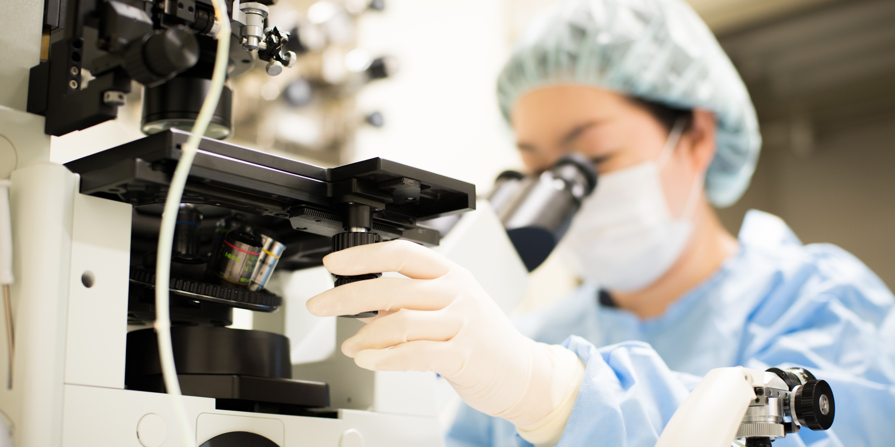

Reproduction
不妊治療について
「赤ちゃんが欲しくても妊娠しない...」多くのカップルがこの悩みを抱えています。
不妊治療は日々進歩しております。以前の治療では妊娠できなかった方も、成功する（妊娠できる）可能性が増えてきております。
私たちは、可能な限り最新の医療を取り入れ、患者様のニーズに合わせた治療を提供するよう努力していきます。

当院で行っている治療内容
当院では、体外受精・顕微授精などの生殖医療（ART）を2004年から導入しています。
2004年4月から2021年11月までに3717人の新規患者様が来院され、一般不妊治療を含め2809回の妊娠例がありました。
一般不妊治療（不妊検査・タイミング指導・排卵誘発）
１、不妊検査（ホルモン検査・子宮卵管造影・子宮鏡検査など）
２、タイミング指導、排卵誘発
生殖補助医療（ART）
１、体外受精
２、顕微授精
３、胚盤胞移植
４、胚（受精卵）の凍結保存
５、融解胚移植
不育症
１、不育症検査
２、低用量アスピリン療法・漢方薬
３、子宮鏡手術
不妊治療チーム
当院での不妊治療は、主に6人のメンバーで行っています。
医師を中心に検査技師、不妊カウンセラー、助産師が連携し、それぞれの分野に熟練したスタッフが担当することにより患者様に適切な治療を行います。
| 医師 | 小西 秀樹 |
| 臨床検査技師 | 松田 広美 (生殖補助医療胚培養士：日本卵子学会) 深田 祐加 |
| 助産師 | 中川 真由美 |
| 看護師 | 塩見 ゆかり (不妊カウンセラー) 高石 さつき (不妊カウンセラー) |
培養室
クリーンルーム・クリーンベンチ
細胞（卵子や受精卵）に対するストレスを最小限にするため、培養室はクリーンルームになっておりさらに処置はクリーンベンチ内で行っています。
検査について
不妊症の原因
不妊症の治療は夫婦一緒に力を合わせて行いましょう！！
不妊症の原因は多種多様です。
男女別に見ると、原因が男性側のみにあるカップルが4分の1、女性側のみにあるものが 5分の2、両方に原因があるものが4分の1です。不妊症は女性の病気と思われがちですが、全体でみると男性側因子によるものは約半数になります。
主な原因
１、排卵因子（ホルモンの分泌異常など）
２、卵管因子（卵管が狭かったり、つまっている）
３、子宮因子（子宮の形の異常など）
４、頸管因子（頸管粘液量が低下し精子が子宮内へ貫通しにくくなるなど）
５、免疫的な異常（精子を障害する抗体の存在や膠原病など）
６、子宮や卵巣の病気（子宮内膜症や子宮筋腫など）
７、男性因子（精子の数が少ない、動きが悪いなど）
８、原因不明
＊不妊症の検査をしても、どこにも明らかな不妊の原因が見つからない場合があります。
不妊症の1/3を占めるといわれていますが、本当に原因がないわけではなく、検査では見つからない原因が潜んでいます。
不妊症の検査
内診・経腟超音波検査
内診台で行います。子宮や卵巣の異常を調べたり、卵胞の計測をします。
ホルモン検査
女性ホルモンは女性の月経周期によって変化しています。各時期に合わせて採血します。
１、卵胞期（低温期）
卵胞刺激ホルモン（FSH） 黄体化ホルモン（LH） 乳腺刺激ホルモン（PRL）など
２、排卵期
黄体化ホルモン（LH） 卵胞ホルモン（E2）など
３、黄体期（高温期）
黄体ホルモン（P）など
精液検査
男性側の検査です。３－４日間禁欲したあと、専用の容器に精液を取って顕微鏡で検査します。
精子の状態（精液量・精子濃度・精子の運動率・奇形精子の割合など）がわかります。
*精子の状態は体調により変化します。1回の検査で不良でも再検査では問題ないこともあるので数回検査をする場合もあります。
フーナーテスト
排卵日に性交をしてもらい、性交後に子宮の頸部の粘液を採取し、精子の状態を確認する検査です。
精子と頚管粘液の相性がわかります。
クラミジア検査・淋菌検査
性行為感染症で、子宮の周囲に炎症を起こし卵管に癒着が起こり不妊症の原因になります。
*特にクラミジアは感染していてもほとんど自覚症状が無いのが特徴です。
子宮卵管造影検査
子宮の入り口から造影剤を注入し、X線写真を撮る検査です。卵管が開通しているかどうか、卵管が詰まっていたらその部位、卵管采の状態、子宮の大きさや形がわかります。
この検査により卵管が開通し妊娠する人もいます。
その他の検査
抗ミュラー管ホルモン（AMH）：自費 9,000円(税別）
卵巣の予備機能の指標として、その有用性が注目されている検査です。
抗ミュラー管ホルモンは女性において原始卵胞から発育する前胞状卵胞から産生され、加齢に伴い下降傾向を示すホルモンです。
発育卵胞数と相関するため、卵巣の予備機能の評価として用いられます。
不妊治療の方針を決定する指標として測定しています。
抗精子抗体：自費 7,000円(税別）
精子の対する抗体で、女性の体内に入ってきた精子を異物とみなして精子の動きを止めたり、受精を障害します。
子宮鏡検査・手術
子宮腔にポリープや子宮筋腫を認める場合、受精卵が着床できないため不妊症となります。 子宮腔内の検査は、子宮鏡検査といって小さなカメラを子宮腔内に入れ観察します。
カメラは、軟性鏡（ヒステロファイバースコープ）と硬性鏡があります。
当院では、検査は径3mmの軟性鏡でおこない、子宮腔内にポリープ、子宮筋腫などの病巣が見つかった場合、麻酔をかけ硬性鏡で病巣を切除します。
一般不妊治療
不妊症の検査で異常が見つかった場合、原因に対する治療を優先します。
原因がわからない場合、さらに詳しい精密検査を行い、原因が判明した場合、原因に対する治療を行います。
精密検査を行っても原因がわからない場合は、まずタイミング指導を行いますが、それで妊娠にいたらない場合もあります。
基本的には原因に対する治療を行いますが、同じ治療を4-6ヶ月行って妊娠に至らない場合には、人工授精や体外受精などに治療をステップアップします。
タイミング指導
基礎体温・超音波による卵胞計測・頸管粘液・尿検査によるホルモンチェックなどにより排卵日を特定し、 性交渉のタイミングを決定することです。
排卵誘発
・クロミフェン療法
生理の3-5日目から5日間内服します。軽度の排卵障害（一度無月経）の方が対象になります。
・ゴナドトロピン療法
生理の3日目ごろから1週間ほど注射を行います。クロミフェン療法より妊娠率は高いですが、 多胎妊娠や、卵巣がはれたり（卵巣過剰刺激症候群）することがあります。
人工授精
人工授精は、男性の精子を子宮内に人工的に注入する方法です。
当院では、成熟運動精子の選別や、細菌などの不純物を除去する目的で、精液を処理して人工授精を行っております。 男性の精子の状態が悪い場合や、頸管粘液に異常がある場合に主に行いますが、性交障害の方に行うこともあります。
生殖補助医療(ART)
生殖補助医療とは卵子と精子両方を操作して行う高度な技術を使った不妊治療を指します。
体外受精・胚移植(IVF-ET)、顕微授精(ICSI)、胚凍結、融解胚移植などが含まれます。
体外受精－胚移植（IVF-ET）
成熟した卵子を卵巣から取り出し、卵子と精子を体外で受精させ、細胞分裂したことを確認してから子宮に胚を移植します。
*当院では、着床直前まで発育した胚盤胞移植を原則に行っています。
治療の流れ
当院での体外受精は、排卵誘発→採卵→媒精→受精の確認→胚培養→(胚凍結)→胚移植→妊娠の診断の順に行います。
排卵誘発
一度に数個の卵子を採取するため、当院では基本的に注射による排卵誘発を行っています。
＊排卵誘発剤を使用しない自然周期で行う場合もあります。
採卵
静脈麻酔下（眠った状態）で、膣から超音波の画像を見ながら採卵針で卵を採取します。約10分で終了します。
(通常4～5個の卵子を採取します。)
媒精→受精の確認→胚培養
夫の精子を採ってもらい、精子を調整します。 卵子に調整した精子を加え、卵管に近い環境で培養し、受精させます。
受精がうまくいけば、受精卵は2日目には3-4分割、3日目には6-8分割ぐらいになります。
5日目には胚盤胞といって着床直前の状態になります。
胚凍結
採卵後に新鮮胚を移植するより、胚を一旦凍結し子宮内膜の着床環境を整えてから移植した方が、着床率（妊娠率）が高いことがわかってきました。
当院では原則的に胚を一旦凍結して融解胚移植を原則としています。
胚移植
胚移植チューブをもちいて1個の受精卵を子宮腔内に移植します。約10分で終了します。
胚移植後約30分間休んでもらいます。
*2008年からは、胚盤胞移植を原則とし、移植胚数は1個に制限しています。
妊娠の診断
胚移植後は、着床・妊娠の維持を促すためホルモン投与を行い、 胚移植後、約10日後に妊娠の判定を行います。
顕微授精(ICSI)
精子がほとんど存在しない方や、受精障害がある方は、顕微授精が必要になります。精子を細いガラスの針を通して卵子の細胞質の中に注入します。高い技術を要する治療です。
方法
採卵された卵子をヒアルロニダーゼ(ヒアルロン酸を分解する酵素)を用いて、 裸化(卵子の周りに付着している顆粒膜細胞を除去)し、顕微授精を行います。
胚凍結保存・融解胚移植
1回の採卵で複数の胚(受精卵)が得られた場合、残った胚を液体窒素で凍結保存します。
胚凍結（ガラス化法）
当院での凍結方法は、新しい凍結技術である「ガラス化法」を採用しています。
(凍結の際には、細胞に生じる低温障害を防止する凍結保護剤として、エチレングリコール、ジメチルスルフォンキシド、スクロースなどを含んだ溶液を使用します。 凍結処理後は、-196℃の液体窒素中で急速凍結し保存します。融解の際には急速に加温して、培養液に戻して培養を再開します。)
融解胚移植
凍結保存している胚(受精卵)を融解し着床に適した（適度な厚みのある）子宮内膜に、適切なタイミングで受精卵（胚）を移植します。
レーザー アシステッド ハッチング
妊娠率の向上のため、高齢や凍結操作により硬くなった透明帯の一部を最新のレーザー装置により薄くし、 ハッチングを補助する操作（レーザーアシステッド ハッチング:LAH）を行っています。
ハッチング（孵化）とは
胚は透明帯という膜に覆われていますが、その膜を破ってから着床します。これをハッチング（孵化）と呼びます。
タイムラプスによる胚の観察
当院では全症例、タイムラプス機能のついた培養器で胚の培養しております。
タイムラプス機能とは
培養器個々に顕微鏡と内蔵カメラとを備え、胚の画像を5分毎の一定間隔で動画として撮影します。 撮影はどの断面からでも観察ができるように、11の階層で撮影されます。 観察は培養器内で自動的に行われるので、胚の確認目的で培養外に胚を出す必要がなく、安定した培養環境で胚の観察が行えます。
患者様も胚の成長過程を動画で見ることが可能です。
不妊カウンセリング外来
不妊治療は短期間の治療で必ず成功(妊娠)するとは限りません。
治療に対する不安・ストレスは相当なものと思われます。不妊治療の情報を詳しく説明し、安心して治療を受けられるようサポートしていきたいと思います。
不妊カウンセラー
人当院では2名の看護師が日本不妊カウンセリング学会で養成・認定を受け、活動しています。
不妊カウンセリング外来診療日程
カウンセリングをご希望の方は外来、受付窓口またはお電話でご相談ください。
産婦人科電話：0897-33-1135
*完全予約制となっています。費用は3,000円／30分（税別）です。
治療成績
初診患者数と妊娠数(治療全体)
| 年度 | 2011 | 2012 | 2013 | 2014 | 2015 | 2016 | 2017 | 2018 | 2019 | 2020 |
|---|---|---|---|---|---|---|---|---|---|---|
| 初診数 | 249 | 243 | 247 | 214 | 278 | 231 | 225 | 216 | 239 | 217 |
| 妊娠数 | 163 | 184 | 215 | 187 | 207 | 234 | 209 | 178 | 195 | 172 |
*胎嚢の確認をもって妊娠と判断しています。
人工授精の妊娠率
| 年度 | 2011 | 2012 | 2013 | 2014 | 2015 | 2016 | 2017 | 2018 | 2019 | 2020 |
|---|---|---|---|---|---|---|---|---|---|---|
| 回数 | 239 | 252 | 242 | 221 | 257 | 294 | 269 | 300 | 298 | 331 |
| 妊娠数 | 18 | 26 | 26 | 18 | 26 | 49 | 37 | 24 | 35 | 22 |
| 流産数 | 3 | 3 | 5 | 4 | 6 | 8 | 7 | 5 | 7 | 5 |
| 妊娠率(%) | 7.8 | 10.3 | 10.7 | 8.1 | 10.1 | 16.3 | 13.8 | 8.0 | 10.6 | 6.6 |
体外受精・顕微授精の胚移植あたりの妊娠率
| 年度 | 2011 | 2012 | 2013 | 2014 | 2015 | 2016 | 2017 | 2018 | 2019 | 2020 |
|---|---|---|---|---|---|---|---|---|---|---|
| 平均年齢 | 35.7 | 36.3 | 36.9 | 37.2 | 36.8 | 35.5 | 36.8 | 37.2 | 36.9 | 36.5 |
| 採卵 | 121 | 157 | 166 | 172 | 176 | 203 | 173 | 192 | 161 | 167 |
| 胚移植 | 95 | 116 | 116 | 146 | 157 | 203 | 171 | 198 | 172 | 150 |
| 妊娠数 | 42 | 48 | 50 | 66 | 73 | 76 | 70 | 72 | 67 | 67 |
| 流産数 | 4 | 9 | 14 | 9 | 22 | 11 | 14 | 16 | 17 | 13 |
| 妊娠率(%) | 44.2 | 41.4 | 43.1 | 45.2 | 46.5 | 37.4 | 40.9 | 36.4 | 39.0 | 44.7 |
不育症
不育症とは？
不妊症と似た言葉に不育症というのがあります。
それは、妊娠はするけれども、流早産を繰り返し生児が得られない状態で、流産を2回繰り返すと「反復流産」といい、3回以上になると「習慣性流産」といいます。
流産について
妊娠した女性が流産する確立は意外と高く、30歳までは8-15%、35歳で20%、40歳では40%、42歳では50%以上といわれています(Andersen AMN et al., 2000)。
流産の確立が20%とすると確率的には2回流産する確立が4%、3回流産する確立は0.8%で健常な方でも約100人に1人は3回流産すると考えられます。
*当院では原則的には2回流産を繰り返した方に不育症のスクリーニング検査を勧めています。
当院で行っている検査
不育症の原因も、不妊症と同様多種多様です。当院で行っている一次スクリーニング検査を原因別に示します。
子宮の形態検査(子宮奇形・子宮筋腫・子宮内腔癒着・頸管無力症など)
1. 超音波検査
2. 子宮卵管造影(HSG)
3. 子宮ファイバースコープ
内分泌検査(黄体機能異常、甲状腺機能異常、高プロラクチン血症、糖尿病など)
1. 下垂体機能検査(LH FSH プロラクチン)
2. 卵巣機能検査(E2 プロゲステロン(黄体期中期)など)
3. 甲状腺機能検査 糖尿病検査(血糖値)
染色体検査
1. 夫婦の染色体検査(転座、ロバートソン転座など)
2. 流産した児(絨毛)の染色体検査
免疫学的検査(抗リン脂質抗体症候群、膠原病)
1. 抗核抗体
2. 抗リン脂質抗体(ループスアンチコアグラント、抗カルジオリピン・β2GPI複合体抗体など)
3. 抗SS-A抗体など
凝固異常
1. aPTT PT
2. AT-III
3. 第XII因子活性
4. プロテインS
当院で行っている治療
低用量アスピリン療法
血液が固まりやすい方(易血栓性患者)に使用しています。
*不育症患者の中にはヘパリン(抗凝固剤)が必要な方もおられます。当院ではヘパリン療法は行っていませんので必要な場合は可能な施設に紹介させていただきます。
漢方薬
子宮鏡手術
子宮粘膜下筋腫、子宮内膜ポリープなどの場合に行います。
費用について
自費診療の場合
治療内容 費用の目安
| 体外受精一式 | 300,000円〜350,000円 |
| 顕微授精一式 | 350,000円〜400,000円 |
治療別内訳
| 排卵誘発剤(注射) | 1回あたり3,000円～10,000円 |
| 採卵＋胚培養(初期胚まで) | 200,000円 |
| 胚盤胞培養 | 20,000円 |
| 顕微授精 | 50,000円(3個まで) *4個以上は1個につき10,000円 |
| 受精卵凍結 (2年間の管理料を含む) |
30,000円(3個まで) *3個以上は1個につき10,000円 |
| 凍結胚の融解胚移植 | 70,000円 |
| アシステッドハッチング | 10,000円 |
| 特定不妊治療費助成金等申請書 | 1,000円 |
*治療内容によって費用は異なります。詳しくは来院時、お聞きください。
*上記費用は税別です。